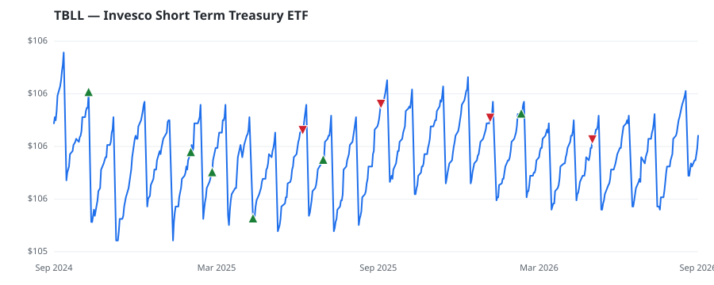

bullish · bearish · n/a — dots: price>SMA10 · SMA10>SMA50 · SMA50>SMA200 · up>down volume (20d)
Other · unknown cap
Members who bought TBLL earned a dollar-weighted -0.0% from their disclosure dates, versus +4.7% for the S&P 500 over the same holding windows (-4.7% alpha).

▲ green = a disclosed purchase · ▼ red = a disclosed sale (plotted on disclosure date)
| Member | Chamber | Out-performer | Disclosed buys $ | Return on buys |
|---|---|---|---|---|
| John Boozman | senate | — | $89K | -0.0% |
Disclosed $ figures are bracket midpoints — filings report ranges (e.g. $1,001–$15,000), not exact amounts.